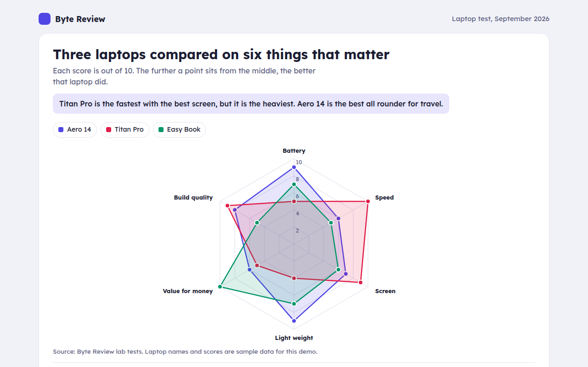
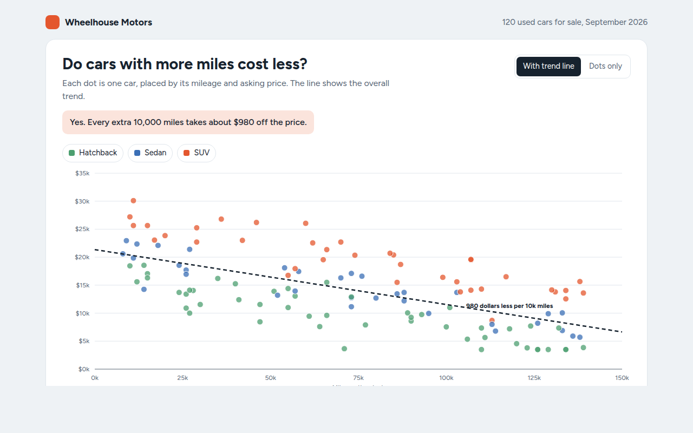
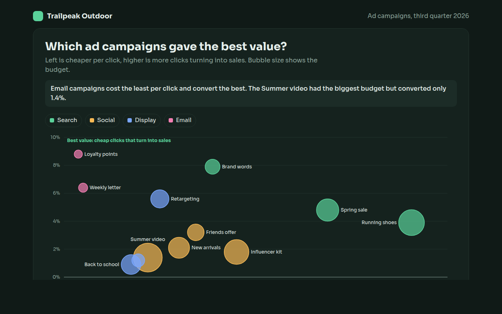
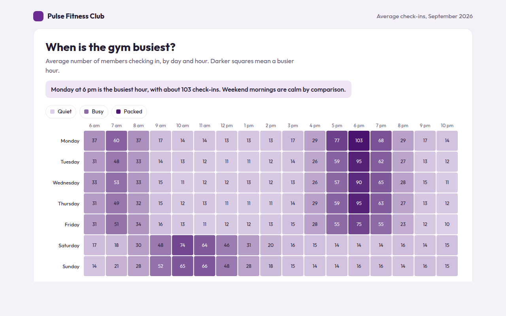
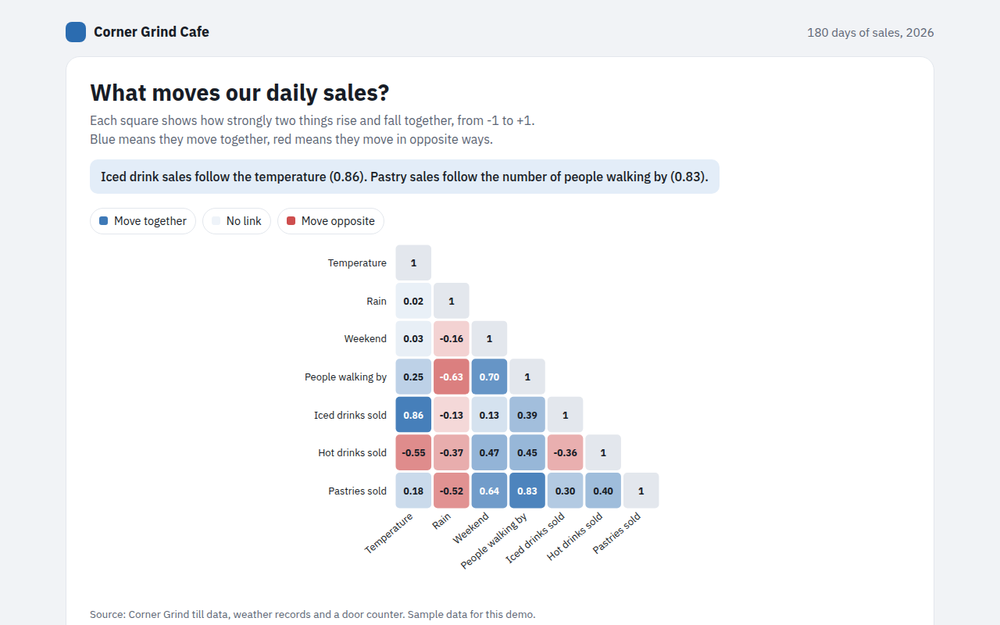
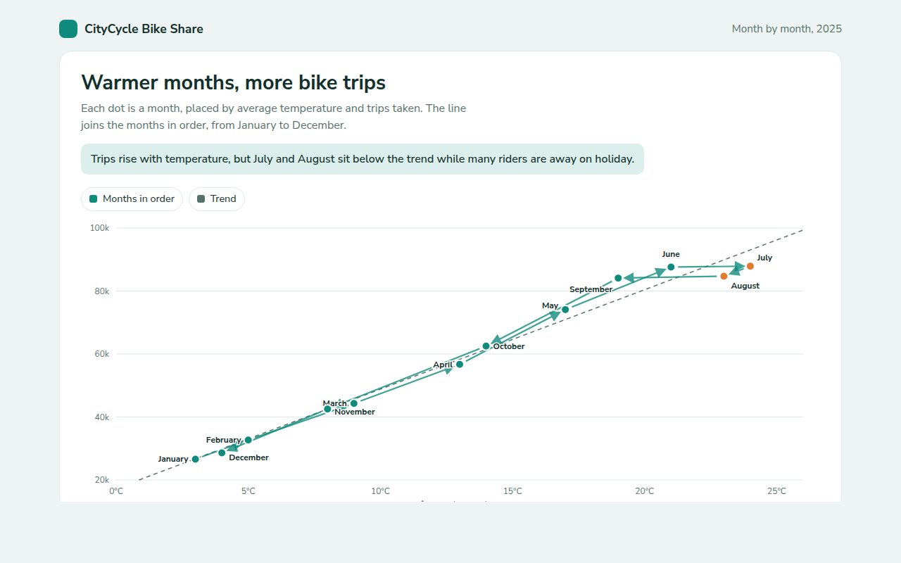
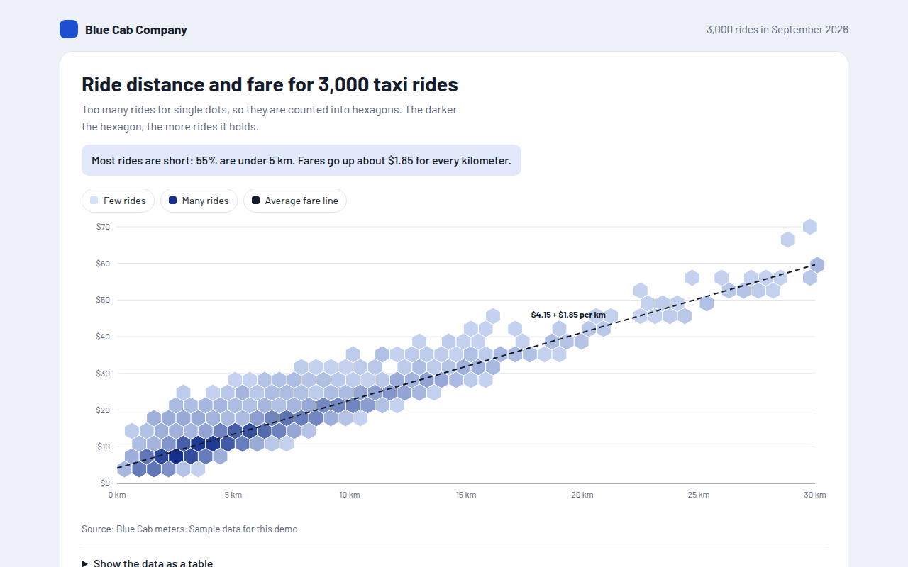
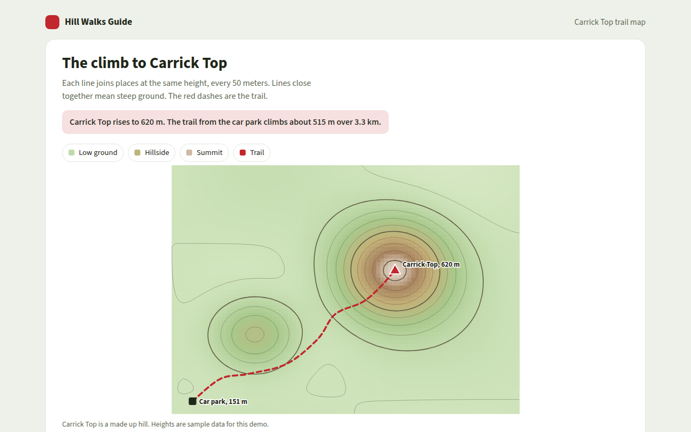
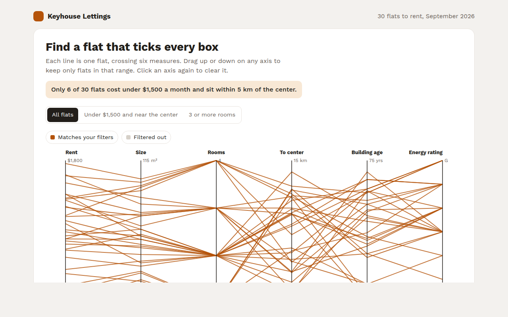
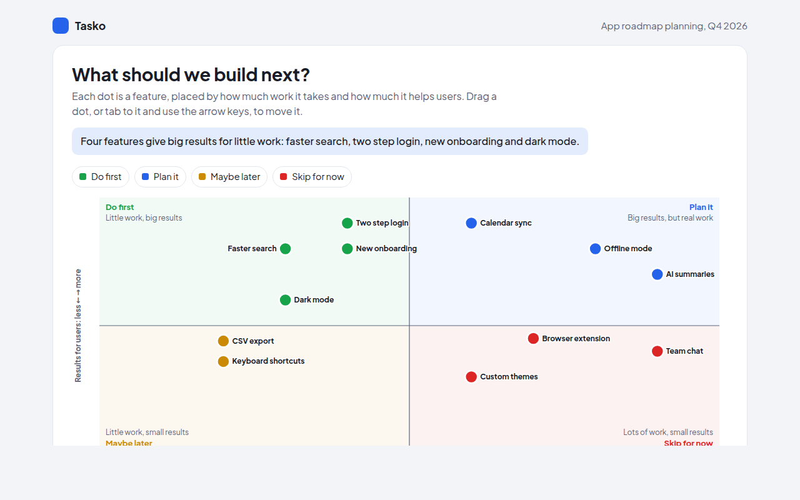

Home / Relationships / Radar Chart
Radar Chart in HTML, CSS and JavaScript
A radar chart, also called a spider chart, shows several scores on axes that spread out from a center, like spokes on a wheel. This free template draws one with plain SVG and vanilla JavaScript, no chart library. The example shows three laptops scored on six features.

What is a radar chart?
A radar chart, also called a spider chart, shows several scores on axes that spread out from a center, like spokes on a wheel. Each item is a shape joining its scores, and bigger shapes mean higher scores.
The shape shows strengths and weak spots at a glance. A spiky shape is great at a few things and weak at others, while a round shape is a good all rounder.
At a glance
- Best for
- Comparing 2 or 3 items across 5 to 8 scores
- Data you need
- A score on the same scale for each feature
- Skip it when
- Many items. Shapes pile up and hide each other.
- Made with
- HTML, CSS and vanilla JavaScript. No library.
When to use a radar chart
- Product comparisons and reviews
- Player or team skills
- Survey scores across several topics
- Staff or course feedback
When to pick another chart
- Grouped Bar Chart: you need exact comparisons of each score
- Parallel Coordinates Chart: you have many items to compare
What you get in this template
- Six axes with rings at 2, 4, 6, 8 and 10
- See through shapes so all three laptops stay visible
- A dot for each score with its own tooltip and Tab stop
- Hide a laptop from the key
- Shapes grow out from the center on load
- Short axis names on phones
How the code works
Here is a short version of the idea behind this radar chart. The full file adds the axis, labels, tooltips, sorting and resizing on top of it.
const axes = ['Battery', 'Speed', 'Screen', 'Weight', 'Value', 'Build'];
const scores = [9, 6, 7, 9, 6, 8];
const cx = 200, cy = 160, R = 120;
const at = (r, i) => [cx + r * Math.sin(i / axes.length * Math.PI * 2), cy - r * Math.cos(i / axes.length * Math.PI * 2)];
axes.forEach((a, i) => { const [x, y] = at(R, i); drawLine(cx, cy, x, y, '#e3e4ef'); drawText(...at(R + 16, i), a, 'middle'); });
make('polygon', { points: scores.map((s, i) => at(R * s / 10, i).join(',')).join(' '), fill: '#4f46e5', 'fill-opacity': 0.2, stroke: '#4f46e5', 'stroke-width': 2 });The example uses four tiny helpers that create SVG shapes. Put them above the code and it runs as is.
const svg = document.querySelector('svg');
function make(tag, attrs) {
const n = document.createElementNS('http://www.w3.org/2000/svg', tag);
for (const k in attrs) n.setAttribute(k, attrs[k]);
svg.appendChild(n);
return n;
}
function drawRect(x, y, width, height, fill) { return make('rect', { x, y, width, height, fill }); }
function drawCircle(cx, cy, r, fill) { return make('circle', { cx, cy, r, fill }); }
function drawLine(x1, y1, x2, y2, stroke, width, dash) {
return make('line', { x1, y1, x2, y2, stroke, 'stroke-width': width || 1, 'stroke-dasharray': dash || 'none' });
}
function drawText(x, y, str, anchor) {
const t = make('text', { x, y, 'text-anchor': anchor || 'start' });
t.textContent = str;
return t;
}How to add it to your website
- Download the file. Click Download HTML file above. You get one file called radar-chart.html with everything inside.
- Change the data. Open the file in any code editor and find the DATA list near the bottom. Replace the names and numbers with your own.
- Change the colors and text. Colors are at the top of the style tag. The title, subtitle and main point are plain HTML near the top of the body.
- Put it online. Upload the file to any host, such as GitHub Pages, Netlify or your own server, or paste it into your site. There is no build step.
Questions people ask
What is a radar chart used for?
It compares a few items across several scores on the same scale, like laptops on battery, speed and screen. The shapes show strengths and weak spots.
Is a radar chart the same as a spider chart?
Yes. Radar chart, spider chart, web chart and star chart all mean the same thing.
How many items can a radar chart compare?
Two or three. With more, the shapes overlap too much. Use small multiples, one radar per item, if you have more.
What are the problems with radar charts?
The area of a shape depends on the order of the axes, and exact values are hard to read. Keep scores on one scale and use bars when precision matters.
More relationships

041. Scatter Plot
Example: used car prices against mileage
042. Bubble Chart
Example: ad campaigns compared on cost, conversion and budget
043. Heatmap
Example: gym check-ins by day and hour
044. Correlation Matrix
Example: what drives daily sales at a cafe
045. Connected Scatter Plot
Example: monthly bike share trips against average temperature
046. Hexbin Plot
Example: distance and fare for 3,000 taxi rides
047. Contour Plot
Example: a hill walk with height lines and a trail
049. Parallel Coordinates Chart
Example: rental flats compared on six measures